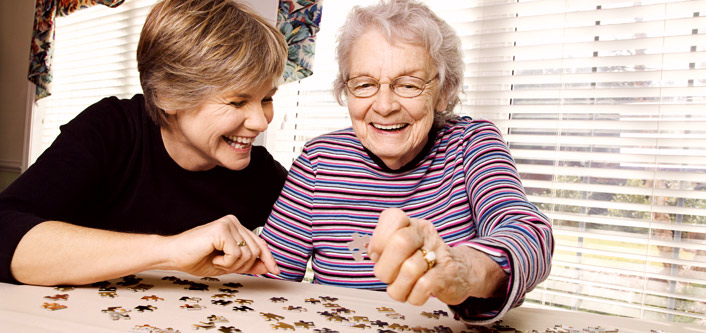

Registered Charity No:1158175
Pensioners Parliament
NPCs annual Pensioners' Parliament is a unique event that plays a vital role in advising on the main concerns of older people.
A full report of the debates on pensions, public transport, dementia, digital exclusion and financial affairs can be obtained from NPCs website (http://www.thinknpc.org/).
What is the NPC?
The NPC is a valuable source of information for forums and older groups based around the country. Data shows that changes to pension indexation and freezes to personal tax allowances have reduced the purchasing power of pensioners' income in the last few years. In addition, there have been severe cuts to social care budgets have left at least a million of individuals coping at home without any formal support.
What data does it show?
The recently published NPC Age Audit 2015 draws on a range of official statistics to counter the claim that elderly people have escaped the impact of the last five years of austerity. These statistics include: • 42% of older people (5.8m) in the UK said they have struggled to afford essential items such as food, gas, electricty, etc. • 7% of over 65s in the UK (700,000) say they went without food/essential items in winter because of concerns of heating costs. • 77% of pensioners under-heat their homes in the winter, e.g. only heat one room as a way of reducing their energy bills. • In 2013/14, 18,200 people aged over 65 in England & Wales died as a result of cold-related illnesses. • Since 2011, there has been a cut of £4.6bn to adult social care budgets. • Meals on wheels services reduced over the last five years from 300,000 to just 109,000.
What does this mean?
In this day and age, it is clearly evident that the elderly population are struggling with the continuous hikes in prices of everday essential things. These statistics demonstrate why it is completely neccessary for charities such as ourselves to continue doing what we do, which is to strive for better standards of living and health of our elderly folks around the UK.